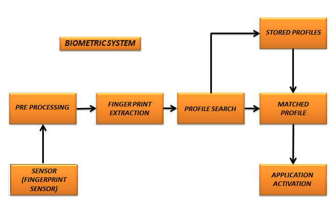

Projects
Design and Analysis of Flexible Conformal Antenna for 5G Wireless Communication Applications
New trends in the emergency communication to support disaster relief personnel aim for reliable broadband connectivity and enabling augmented information services, include not enough bandwidth to provide augmented information services or extremely limited wireless coverage and demands extremely high data support and reliability. Conformal antennas are widely used in many applications for its characteristics of high radiation efficiency, high gain, reduced size and wider bandwidth. The conformal antenna is used for its portability and light weight for public safety communications. The antenna is designed for the wearable purpose. The conformal antenna is designed and simulated using CST Microwave Studio 2019. Textile technology is chosen for the fabrication of designed antenna. FR-4 substrate is used as a dielectric. The simulated results are in synchronous with the target parameters. The size of the antenna is made compact and flexible. Dimension and total thickness of the antenna is given as 14.59 X 18.79 mm and 0.8 mm. The resonant frequency is achieved at 4.62 GHz. The effective bandwidth for these results is 3.5 GHz to 5.5 GHz with better return loss below-20 dB is achieved from the simulation.
Fingerprint Detection
Used biometric solution for authentication on computerized systems and to verify the authenticity of one person by his fingerprint. The user provides his fingerprint together with his identity information like his ID number. The fingerprint verification system retrives the fingerprint template according to the ID number and matches the template with the real time acquired fingerprint from the user which is done using Image Processing (Matlab).

Object detection and Tracking
Object detection and tracking is the techniques that can be used to identify moving parts in a video. The process is frame differencing, colorspaces between two different videos, background seperation, Haar cascade classifiers for face detection, eye detection, nose detection and finally canny's edge detection is done using Image Processing OpenCV (Python).
License Plate Recognition using Python
The first step is to detect the license plate from the car. We will use the contour option in openCV to detect for rectangular object to find the number plate for license plate recognition. Character segmentation, once we have detected the license plate we have to crop it out and save it as a new image. Character recognition, new image that we obtain in the previous step is sure to have some Characters written using Image Processing OpenCV (Python).